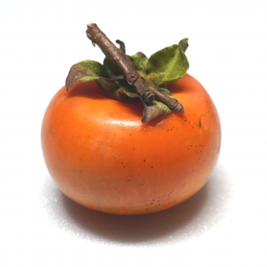
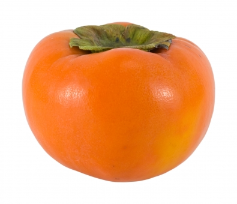

野菜を未来へ連れていく。それがわたしたちの役目だと思っています。 未来に在ってほしいものは、たくさんある。 でも、どんなに便利な世の中になったって、 野菜がなければ人は健やかに生きてはいけない。 野菜も、それを作っている農家さんも、未来になくてはならない存在。 サカイダフルーツが旗をふる。 未来に必要なものたちを、旗をふって連れていく。
この味を、超えてほしい。
求人米「あととりむすこ」は、 群馬県桐生市黒保根町生まれ。 美味しいお米をつくるうえで 欠かせない「きれいな水」と 「昼夜の大きな寒暖差」という 条件を満たした、赤城山のすそ野 に位置します。豊かな自然に 恵まれ、愛情をもって育てられた お米は、全国最高レベルの 食味スコアを誇ります。 一方で、同町は2007年に桐生市に 合併されるまで、人口約2700人の 過疎地域「黒保根村」でした。 後継者探しは特に深刻な課題と なっています。